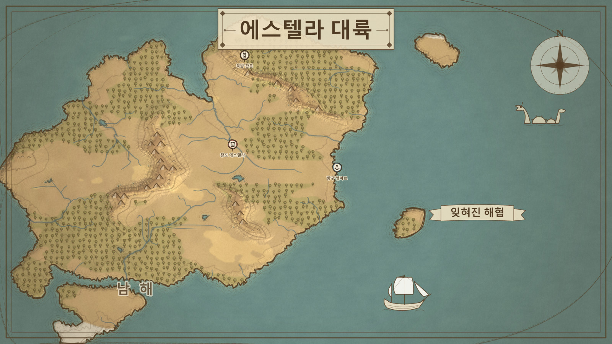
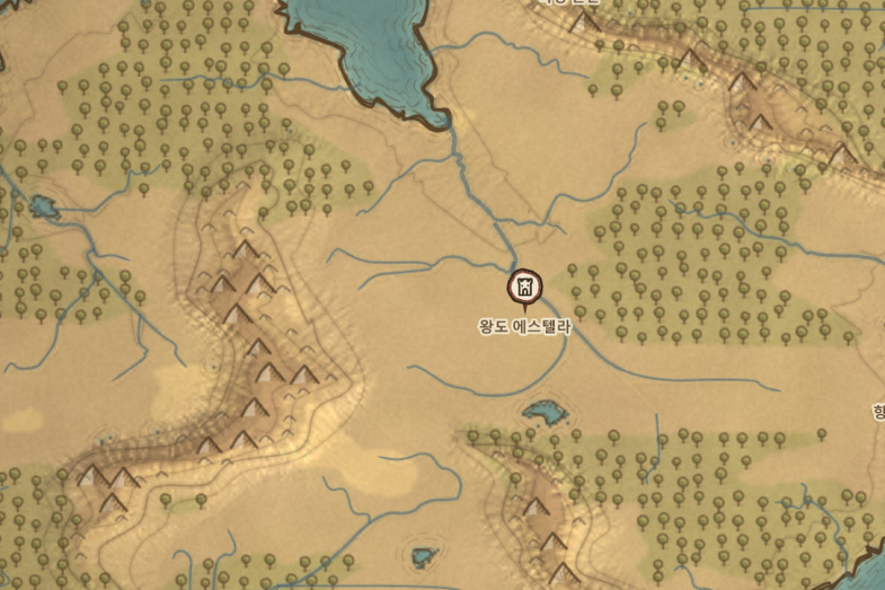
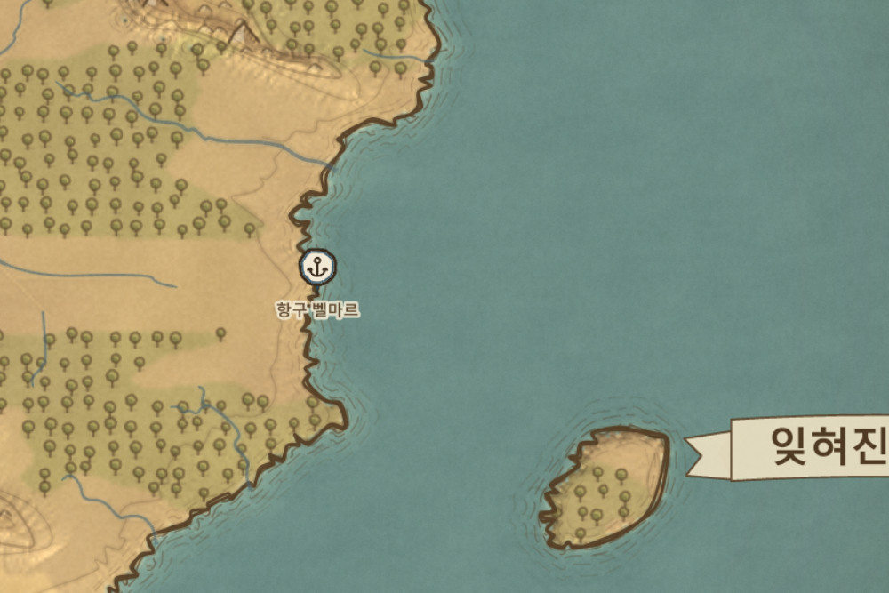
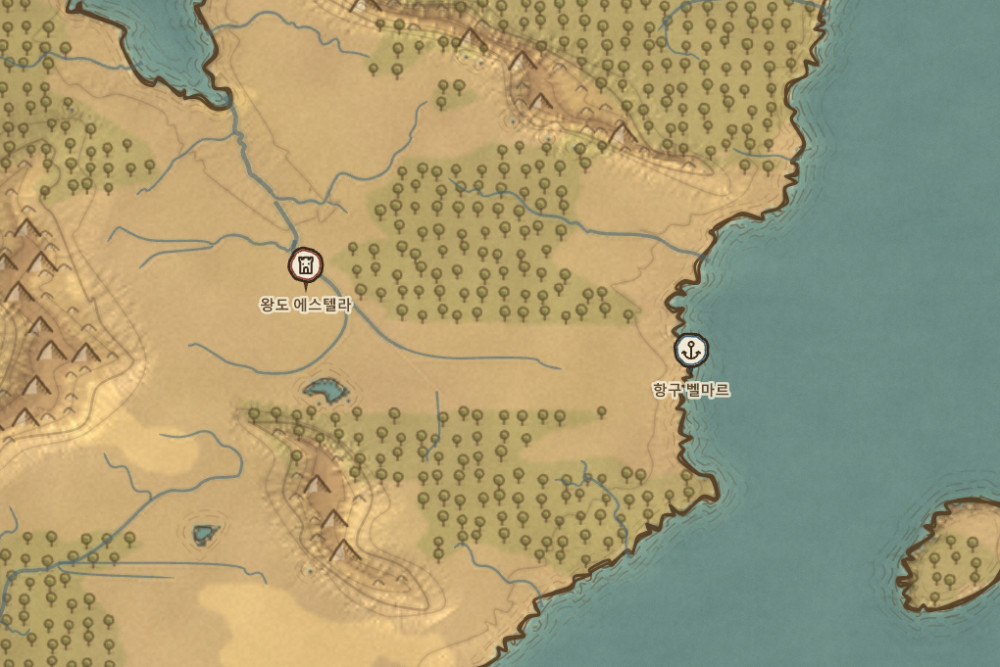
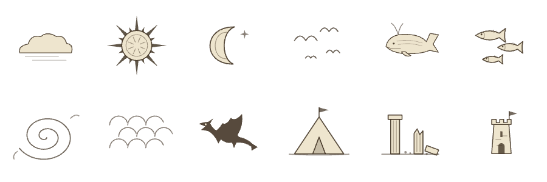

침식과 강, 산맥과 해안이 손으로 그린 고지도로 깨어납니다.

노이즈에 물방울 침식과 유량 수문을 더해, 계곡과 강줄기가 자연스럽게 새겨집니다. 대륙마다 산맥 등뼈가 놓이고, 주사위 한 번이면 완전히 새로운 세계가 나타납니다.
같은 시드는 언제든 같은 지형으로 돌아옵니다.

수채 워시 위에 만년필 해안선과 등고선을 얹고, 해안을 따라 동판화 잔선을 겹겹이 새깁니다. 크게 확대해도 벡터 디테일이 무너지지 않습니다.

수도와 유적에 마커를 찍고 옵시디언 문서를 연결하면, 클릭 한 번으로 설정 노트가 열립니다. 노트에서 지도의 그 장소로 되돌아올 수도 있습니다.
지역·리본 문구·자유 그림까지, 세계관을 지도 위에 그대로 담습니다.
클릭 한 번으로 지도 위에. 잉크와 종이 톤이 스타일에 맞춰 조용히 어우러집니다.

세 가지 손맛으로, 바이옴 색까지 자유롭게.
따뜻한 양피지에 세피아 잉크. 가장 고전적인 고지도.
선명한 바다와 초록 대지. 삽화 같은 컬러 톤.
흑백 펜화. 종이와 잉크만으로 그린 판화.
Vellum의 흐름은 단순합니다 — 만들고, 다듬고, 잇는 것.
지형 탭에서 주사위를 굴려, 마음에 드는 대륙이 나올 때까지 생성합니다.
브러시로 지형을 손보고, 스타일과 색·헤칭을 취향껏 조절합니다.
마커를 찍고 노트를 연결해, 세계관을 하나의 지도로 엮습니다.
Obsidian 1.4.0 이상 · 데스크톱. 외부 라이브러리 없이 순수 캔버스로 동작합니다.
.obsidian/plugins/vellum/에 복사합니다. (Windows는 동봉된 install.ps1로 한 번에)
Unblock-File -Path .\install.ps1을 입력해 차단을 풀고 다시 시도하세요.
이전에 Fantasy Map Studio를 쓰셨나요? 지도 파일(.fmap)은 그대로 열립니다. 새로 설치한 뒤 기존 플러그인은 비활성화하세요 — 둘 다 켜져 있으면 충돌할 수 있습니다.